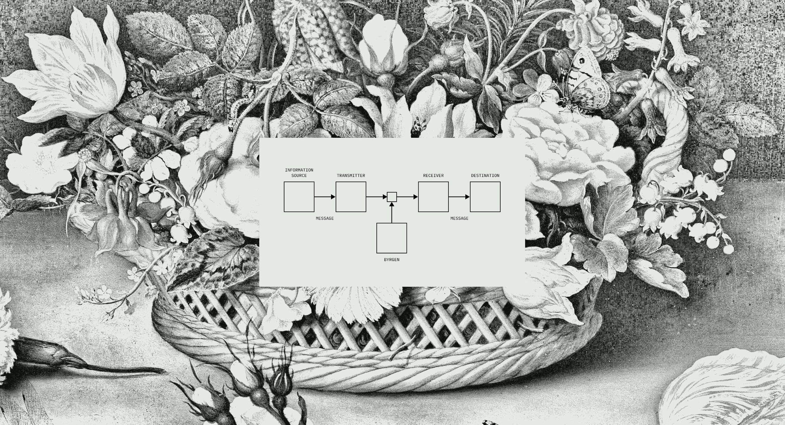
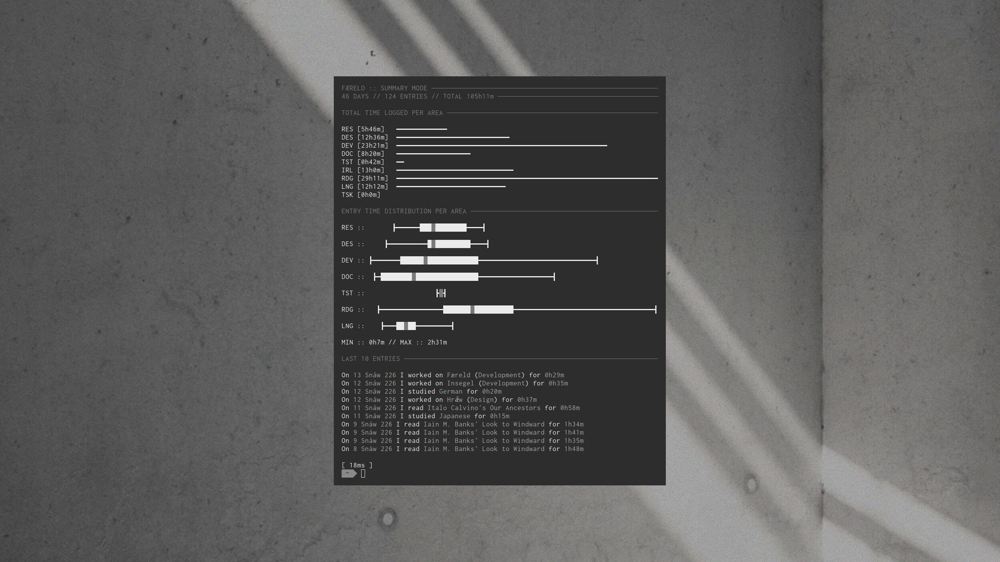

[I'm Mika]; I'm professionally a software engineer, and that's kind of what I tend to also do a lot in my personal time, mostly because I like software engineering as a creative output – I really like the ways in which you can kind of like pick up different things and different ways of thinking about like both human-computer interaction problems, but also like visual problems.
And I can pick up things from other people and kind of like, incorporate them into [my] own kind of toolset, for solving open problems – and I kind of I guess I characterize my role as a toolmaker. I like making mostly programming tools, but I have made a few kind of in real-life tools, so to say.
Within kind of like, the programming world, people kind of use different "paradigms" I guess, maybe is the right word? To structure not only the code that they write, but the way they think about the problems they're trying to solve, and the approach that they take for it.
A very common one is called "object-oriented programming", in which you model the problem that you're trying to solve by breaking it down into "classes", which are kind of like descriptions or outlines of "entities", and concrete instantiations of those entities – that have both a public interface, and private components, or private information that they only expose through that public interface.
And then you model your programs to solve those problems as interactions between these "instantiated" objects, as it were. And that's quite a dominant paradigm.
One that’s kind of less dominant, but is still quite interesting, is one that you already mentioned, which is called "functional programming", in which the problem that you're attempting to solve – you don't muddle it as a set of objects interacting with each other, but you essentially model it as a "function", which -to put kind of like a quick spin on it-, is something that takes a set of inputs and maps that to a set of outputs.
Take for example the "add" function: it might take two inputs from the set of say integers, and map that to a single output in a set of integers. And so the way in which you model these computational problems, in functional programming, is that you model them as functions that act on sets on data, that tend to transform them or return data or do something like that, and then you compose all those functions into essentially one giant expression, and that is your program.
This way of thinking about it allows for a lot of kind of programming tricks, that are quite difficult to do in another paradigms. For example like, "composability", I really like – which is when you take functions that have specific "functions" I guess, for the lack of a better word, and you can link them with other ones in order to create bigger functions.
So you might have a function that goes from type A to B, and another function that goes from type B to C, and you can compose them to create a new "holistic" function that goes from type A to C. You can do all sorts of kind of cool kind of programming tricks around controlling effects, and being able to reason a lot better about what the functions do.
Functional programming tends to have -not always-, but tends to have a bit of an emphasis on principles of "purity", in the sense that functions shouldn't affect the world outside of them – which tends to happen quite a lot in OOP, where the functions themselves may do something outside of the function's scope.
A common example is that, for example in Python, you might have a function “add” that takes sums two numbers, but there's no guarantee that when you call this function it will not also trigger the release of a nuclear warhead halfway around the world.
There is no way of locking down this kind of impurity. Whereas in Haskell, it takes two integers and returns two integers, that's all it will do. To have effects outside of it, they have to be marked as that.
I just like the way that functional programming forces you to think about you all the problems you're trying to solve in a different way, and I really like a lot of the principles around purity and being able to look at a chunk of code and just reason about what it's doing, and the scope of the function is, it's like more compressed, let's say.
It's a kind of a mixed bag. Like, it's fairly evident that the quality of my life and the lives of the people that I know are enabled through this kind of all-pervasive hegemony of computational technology; and in a lot of cases, I feel that that has been a very positive thing.
I think the broadening of communication like, the kind of effective communications [at our disposal] have kind of shrunk the world in a way that like I feel a lot of people find is a negative, but I find it quite a positive you know.
I'm like – I was always a bit of a kind of like a loner growing up, but being able to have kind of social connections outside of your immediate geographical space, through communication technology, I always felt was like incredibly important to my development, and I think it's a thing that a lot of people take for granted.
But on the other hand, I do feel that the all-pervasiveness of technology today, especially when it comes to I guess kind of like, when it comes to how we as human beings behave (...) these all pervasive systems pop up where they ingrain quite perverse incentives when it comes to information seeking, in terms of like the news that we consume or the kind of way that we relate to other human beings.
It can sometimes I think – it has been almost like gamed by the sheer kind of ubiquity of kind of technology, and how it's able to come to monitor people's reactions to things and then reinforce like how information adapts to people.
But I don't think that's a consequence of technology, I think it's more of a sum between technology -plus- capitalism, in the sense of – yeah, it's kind of difficult to think about one without the other.
For me the act of programming is kind of strange, because it's, self-evidently – when you go through people's websites, -especially if we speak about the Merveilles webring-, you are confronted with quite a wide range of creative approaches to the problem of designing a space, and so it's quite a creative act.
But at the same time, you produce something concrete – I feel like the thing that I like a lot about coding is that it's this kind of creation – it allows you to kind of create an assemblage of I guess, creative output that oftentimes directly relates to other people's creative output, in a kind of like network of artistic endeavor.
I feel like coding has allowed myself to express myself creatively, but also develop myself creatively. Before I kind of got involved in Merveilles, the way I thought about web design, and tool design, and how you present kind of information or yourself to like the internet, as it were, was quite limited.
What I love about Merveilles is that it gave me this rich kind of vocabulary of projects that you can like pull things from, and like learn from, and find techniques and ways of like expressing yourself in [different] ways.
I feel like tracking, especially for me like, with my like Færeld, project and with Hrǽw, as well, which kind of produces a visualization of the stuff that I track, it's mostly because I feel like tracking has become quite important in Merveilles, just because it allows you to [pin down] something that's quite abstract and nebulous, in a way that then you can like present it to someone else in a kind of like, it kind of scratches that itch in a way of seeing a number.
For me, when I made my Færeld time tracking tool, it was – the purpose of it, the driving force behind it, was kind of twofold. One was well, I find that “metrification" has often kind of affected outcomes in the sense of: I think like a lot of us have had like experiences of like in a day-to-day work, of being tracked on a metric, and then being forced to optimize that metric as much as possible, for the gain of someone else, whether it be an employer, or whatever.
So I thought “it would be nice to metric-ify the things about myself that I care about -in this case, how much time I spent on creative projects-, in a way that allows me to optimize them for myself, and not for some others seeking to extact value from me”.
And the kind of second driving motivation behind it was that at the time I had quite low self-esteem about like the projects that I was doing; I felt like I was never doing anything useful, I had this kind of like sinking feeling that I was just kind of treading water, or stagnating, developing the things that I care about myself.
And so time tracking was also a way to say, "I am actually developing, I am actually putting work into the things that I care about, and progressing", and that allowed me to see the like distribution of what kind of activities I was doing when it came to these things, it was kind of self-affirming, in a way?
And yeah, it is kind of strange, that you feel like you're not doing anything until you track what you're doing – and then you have a bar graph and numbers like, the numbers don't lie to you in the same way that your brain does.
Yeah, I definitely agree with what you said about like, people trying to find some kind of clarity or, taking the messy systems that they have to interact with, in this case like the Gregorian calendar, and trying something else that they think might adhere more to their own principles.
(...) When I first started using my calendar, that's like based on the French Revolutionary calendar, I missed quite a few doctors appointments just like updates and things like that (laughs) so in effect, even though the calendar itself is kind of systematic and rational, I guess, it did introduce a little bit of additional hassle into my life.
And I think maybe this also feeds into the almost kind of obsession that there is within the Merveilles "minimalism", when [we] create interfaces. Like I'm thinking of a lot of Devine projects especially, the live music coding tool [Orca], or whatever (…) there’s definitely a drive towards minimalism as a way of I think having systems and interfaces that are smaller in scope, but much clearer in what they're trying to do.
And I feel that yeah, I think this is a way of trying to fight back against the messiness and clutter of like the systems of our [day-to-day].
(...) I'm not quite sure – I feel like this kind of tendency also happened with the word "algorithm"; like, its simple definition [is that] an algorithm is just something that follows a list of steps to produce a mathematical result, or a computational result.
But like the word algorithm has become infused with this kind of secondary meaning, or context, in which it speaks to a kind of like almost "kafka-esque", opaque kind of bureaucracy.
So for something to be algorithmic, is not like speaking in the sense that maybe a computer scientist might understand it, but for something to the algorithmic means to be kind of opaque and bureaucratic and a decision made not only away from where you can see it, but also potentially made to take advantage of you.
I think this trend will probably get worse. I feel like, as more and more kinds of systems become codified, for lack of a better word, or automated, people will tend to associate the bad things about these systems with automation.
I feel like a lot of the kind of creative potentials of programming are maybe at least [right now] being lost in kind of popular consciousness, and not for unfair reasons. A lot of people's day-to-day interactions with automated systems are being colored by this kind of opaque decision making.
I mean it's kind of bad because like if something works well you don't tend to notice it, and I feel like that's often the case with programming: if something that's programmed looks well, and has a positive effect, then it tends not to be noticed – but when something breaks, or has a negative effect, then it kind of makes itself known and stands out.
Yeah, I often feel like [there’s] a "naturalistic fallacy", when it comes to algorightms. I'm I guess a computational materialist – I believe that like "nature" in the sense of you know, like physics, all the way up through like cells, to humans, to like everything else, is kind of computational in a sense already.
And I feel [that] this kind of juxtaposition of like the messy natural world, versus the orderly algorithmic world, is kind of a false one, in the sense that like "neat orderly algorithms" get messy when they become kind of dynamic, and when they interact with each other.
I feel that, kind of, the natural world is a consequence of just lots and lots of dynamic algorithmic systems interacting all the time, and I feel that people tend to associate one with kind of "goodness" and the other with "badness".
Mostly because the algorithms that we tend to deal with in our day-to-day lives, that we consciously recognize as algorithms, tend to be quite simple, in terms of both like kind of the domain that they're trying to like "compute" over, and the kind of outcomes that they're trying to optimise for.
Like for example, human relationships are computational processes; but the things that people dislike about like, Tinder, and relationship apps and like this kind of "algorithm-ization" of human relationships, is not necessarily that it's algorithmized – but it’s more that like the algorithm itself is a lot smaller in scope, and it's not necessarily optimized towards the end that -you- would like.
I feel like algorithms tend to get a bit of a bad rap (...) and I feel, deep in my heart, that everything is one big algorithm. (…) I do believe there is a way to design algorithms that humans like.
In terms of like, how I got into coding itself, it was not a path I entirely decided by myself; when I was at school, a subject that I loved, and still love, was English literature; especially Shakespeare – I was really into Shakespeare, still am; and my entire kind of plan for myself would be to go to University to study English literature.
But I came from a strict home, so my dad was quite adamant that I should focus on a "real" subject, and at the time I liked computers, but [more] as a kind of consumer object, like – I played like Unreal Tournament and stuff on them, and RuneScape. I liked using computers, so I thought "hey, going to this computing class in college might be cool".
(…) I had no real intention of learning to code [then], it was more like "well, computers seem useful". But through that class, and also through the work that I did, I really came to love programming and computing as creative endeavours.
And like, in a way, I kind of almost went back to where I was, in the sense that like I feel like programming has a lot of the creative like, "positives", that I found when I did like English literature: a lot of like analysis, and thinking about the context, and interpretation of texts.
In terms of where I want to go – at the moment I'm reading quite a lot of "philosophy of mind", like neurobiology books, mostly popular books, a few textbooks here in that because I started to kind of get interested in the notion of, just, not “rationality” in the kind of like stoic kind of sense, but just like, just thinking as a computational act.
I started to get quite interested in (…) this stance of "eliminative materialism", which is all about how the concept that we have about the mind, and thinking, are all kind of like phantom concepts; and that they don't actually have like a direct correlation in like the kind of neural configuration of your brain, that kind of stuff.
Which I find quite interesting. I mean it's kind of self-refuting in the sense of like, "I think I don't exist", which is like, well (laughs) but yeah, outside of that, I hope to build more tools that people get to use; I'm trying to get more involved in software as a way of kind of working on tools that other developers use, and get some kind of value and act as a kind of force multiplier.
Other than that, I would love to continue listening to music and making monochromatic websites and things.